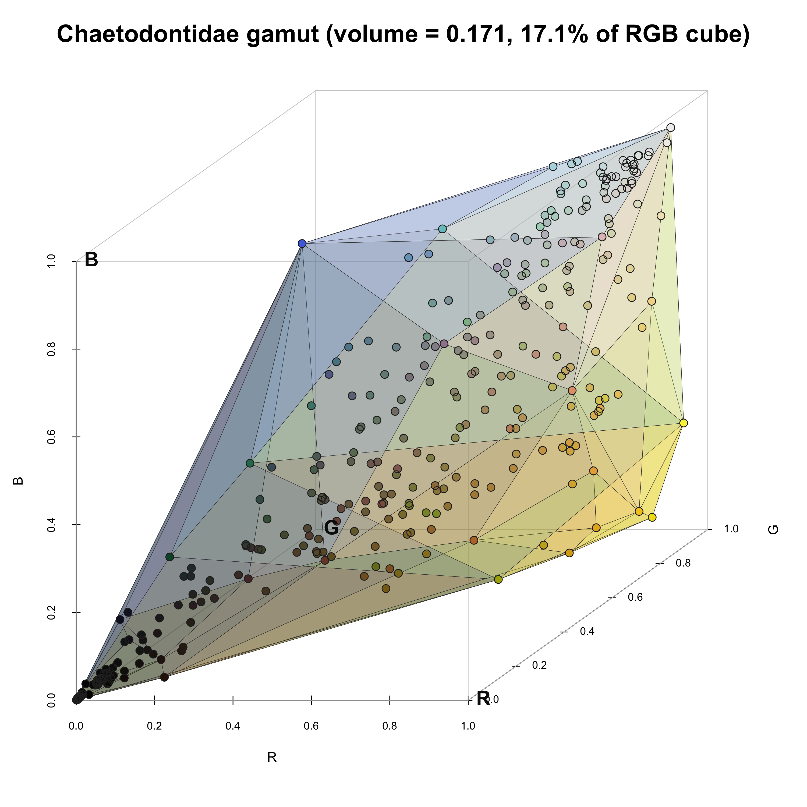
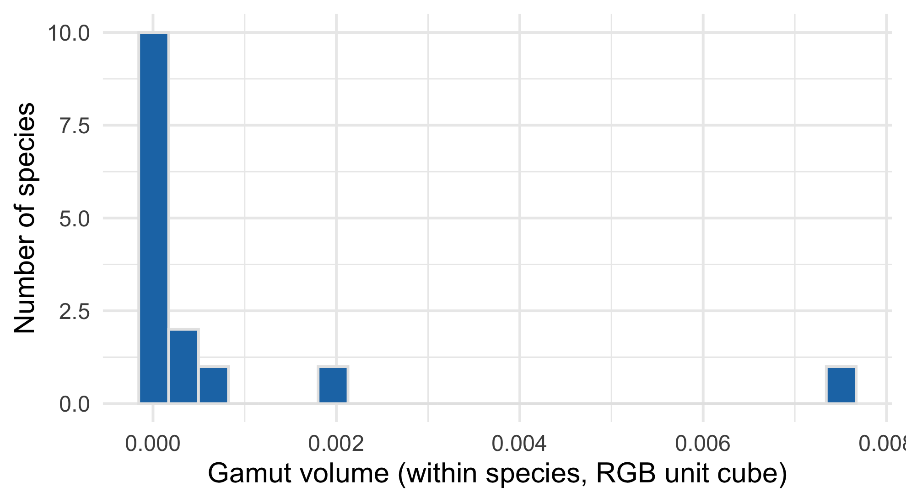

RGB convex hull from pavo::classify cluster centers
Tip
Foundation Recipe — every group runs this one. The output is a single number (gamut volume) plus a 3D RGB scatter showing where the clade lives in color space.
What you’re computing
For each exemplar species:
pavo::classify(img, kcols = k) quantizes the image into k perceptual color clusters (one of those clusters is the background).
We pull the cluster centers out as RGB triples (the per-species “palette”).
We drop the background cluster (recorded in bg_class_id from the pavo adjacency CSV).
Pool all surviving cluster centers across the clade → a cloud of points in the unit RGB cube.
Gamut volume = 3D convex hull of that cloud (via geometry::convhulln), expressed as a fraction of the unit cube (1 = fills the full RGB space).
Warning: package 'ggplot2' was built under R version 4.5.2
Warning: package 'tibble' was built under R version 4.5.2
Warning: package 'tidyr' was built under R version 4.5.2
Warning: package 'purrr' was built under R version 4.5.2
Warning: package 'dplyr' was built under R version 4.5.2
BUNDLE <-"../../bundle"# Per-species annotation: gestalt_k (used for classify) and bg_class_id# (cluster index to treat as background). In a real student workflow, you# would build this file by inspecting your classified images.ann <-read.csv(file.path(BUNDLE, "species_k_bg.csv"),stringsAsFactors =FALSE)bg <-setNames(ann$bg_class_id, ann$species_dir)
The pavo classify step
# === Canonical recipe call — RUN ONCE, then comment out ===# This takes ~10-15 minutes on a Mac mini for 130 species.# After it completes, the saveRDS line below caches the result so the# rest of the recipe (and every re-render) runs in seconds.classified <-vector("list", nrow(ann))names(classified) <- ann$speciesfor (i inseq_len(nrow(ann))) { png <-file.path(BUNDLE, "images", paste0(ann$species_dir[i], ".png")) img <- pavo::getimg(png)set.seed(20260526) # stable cluster IDs across knits classified[[i]] <- pavo::classify(img, kcols = ann$gestalt_k[i])}saveRDS(classified, file.path(BUNDLE, "pavo_classify.rds"))
# Cached object produced by the chunk above (live call commented out).classified <-readRDS(file.path(BUNDLE, "pavo_classify.rds"))cat(sprintf("Loaded %d classified images from cache.\n", length(classified)))
Loaded 130 classified images from cache.
Extract cluster centers (drop background)
get_palette <-function(rimg_obj, bg_id) { rgb_mat <-attr(rimg_obj, "classRGB") # k × 3 matrixif (is.null(rgb_mat)) return(NULL)if (!is.na(bg_id) && bg_id >=1&& bg_id <=nrow(rgb_mat)) { rgb_mat <- rgb_mat[-bg_id, , drop =FALSE] } rgb_mat}palettes <-mapply(function(rimg_obj, sp) { p <-get_palette(rimg_obj, bg[gsub(" ", "_", sp)])if (is.null(p)) return(NULL)data.frame(species = sp, R = p[, "R"], G = p[, "G"], B = p[, "B"]) }, classified, names(classified),SIMPLIFY =FALSE)palettes <-bind_rows(palettes)cat(sprintf("Palette cloud: %d cluster centers from %d species\n",nrow(palettes), length(unique(palettes$species))))
Palette cloud: 341 cluster centers from 130 species
head(palettes)
species R G B
1 Amphichaetodon howensis 0.712462918 0.791139840 0.68843002
2 Amphichaetodon howensis 0.157093400 0.223932093 0.21390473
3 Amphichaetodon melbae 0.002662411 0.003529652 0.00456698
4 Amphichaetodon melbae 0.497675267 0.542690550 0.47387326
5 Amphichaetodon melbae 0.611291468 0.727787100 0.76582796
6 Chaetodon adiergastos 0.466961379 0.486782086 0.11507019
Chaetodontidae gamut volume: 0.1715 of unit RGB cube (17.1%)
Plot — the gamut as a Stoddard-style faceted hull
The classic Stoddard & Prum (2011) tetrahedral-color-space figures show the achieved color volume as a semi-transparent faceted polyhedron, with the hull’s triangular facets visible against a wireframe reference space. We do the same here in RGB space: the unit cube is the theoretical maximum, the faceted polyhedron is what Chaetodontidae actually occupies.
# Hull triangulation — the same `hull` object computed above already has# the triangle vertex indices in its $hull slot (options="FA").triangles <- hull$hullcols <-rgb(pts[, 1], pts[, 2], pts[, 3])# Draw the unit RGB cube wireframe + scatter, then overlay hull facetspar(bg ="white", mar =c(2, 2, 3, 1))s3d <-scatterplot3d(NA, NA, NA,xlim =c(0, 1), ylim =c(0, 1), zlim =c(0, 1),xlab ="R", ylab ="G", zlab ="B",box =FALSE, grid =FALSE, angle =35,cex.main =1.8,main =sprintf("Chaetodontidae gamut (volume = %.3f, %.1f%% of RGB cube)", vol, 100* vol))
Warning in min(x): no non-missing arguments to min; returning Inf
Warning in max(x): no non-missing arguments to max; returning -Inf
# Reference: unit-cube wireframe (12 edges)cube_v <-expand.grid(R =c(0, 1), G =c(0, 1), B =c(0, 1))cube_edges <-list(c(1, 2), c(3, 4), c(5, 6), c(7, 8), # R-axis edgesc(1, 3), c(2, 4), c(5, 7), c(6, 8), # G-axis edgesc(1, 5), c(2, 6), c(3, 7), c(4, 8) # B-axis edges)for (e in cube_edges) { p1 <- s3d$xyz.convert(cube_v$R[e[1]], cube_v$G[e[1]], cube_v$B[e[1]]) p2 <- s3d$xyz.convert(cube_v$R[e[2]], cube_v$G[e[2]], cube_v$B[e[2]])segments(p1$x, p1$y, p2$x, p2$y, col ="grey80", lwd =0.8)}# Hull facets — order back-to-front by mean B (rough depth-sort so front# facets paint over back ones)facet_depth <-apply(triangles, 1, function(idx) mean(pts[idx, 3]))order_idx <-order(facet_depth)for (i in order_idx) { v <- triangles[i, ] facet_pts <- pts[v, ] facet_col <-rgb(mean(facet_pts[, 1]),mean(facet_pts[, 2]),mean(facet_pts[, 3]),alpha =0.35) scr <- s3d$xyz.convert(facet_pts[, 1], facet_pts[, 2], facet_pts[, 3])polygon(scr$x, scr$y, col = facet_col, border ="grey25", lwd =0.4)}# Cluster centers on topscr_pts <- s3d$xyz.convert(pts[, 1], pts[, 2], pts[, 3])points(scr_pts$x, scr_pts$y, col = cols, pch =16, cex =1.3)points(scr_pts$x, scr_pts$y, col ="grey15", pch =1, cex =1.3, lwd =1.0)# Light per-axis labels back onaxis_labels <-c("R", "G", "B")for (j inseq_along(axis_labels)) { pos <-c(0, 0, 0); pos[j] <-1 p <- s3d$xyz.convert(pos[1], pos[2], pos[3])text(p$x, p$y, axis_labels[j], pos =4, cex =1.5, font =2, col ="grey5")}

Stoddard-style view of the Chaetodontidae color gamut in RGB space. Wireframe = unit RGB cube (theoretical max). Faceted polyhedron = convex hull of cluster centers (achieved gamut). Points = individual species cluster centers, colored by their RGB triple. Background-cluster points already removed.
Three 2D projections of the gamut cloud, stacked single-column for poster legibility.
Per-species gamut sizes
The same convex hull can be computed within a single species’ palette as a measure of that species’ chromatic range.
sp_gamuts <- palettes %>%group_by(species) %>%filter(n() >=4) %>%# need 4+ non-bg clusters for 3D hullsummarise(n_clust =n(),vol =tryCatch(convhulln(cbind(R, G, B), options ="FA")$vol,error =function(e) NA_real_ ),.groups ="drop" ) %>%arrange(desc(vol))cat(sprintf("Per-species gamut volumes available for %d species (those with k>=5):\n",nrow(sp_gamuts)))
Per-species gamut volumes available for 15 species (those with k>=5):
ggplot(sp_gamuts, aes(vol)) +geom_histogram(bins =24, fill ="#1f77b4", colour ="grey90") +labs(x ="Gamut volume (within species, RGB unit cube)",y ="Number of species") +theme_minimal(base_size =20)

Distribution of per-species gamut volume. Most species occupy a small chunk of the clade-level gamut; a handful are surprisingly chromatically broad.
Takeaways
Clade-level gamut volume for Chaetodontidae is 0.171 of the unit RGB cube. For reference, an all-grey clade would have volume near 0 (all clusters collapse to the diagonal); a clade with bright pure reds, greens, and blues would approach 1.
The 3D scatter shows the clade lives mostly in the yellow-orange-brown corner with extensions into bright white (the unbarred body color of many butterflyfishes) and very dark black (the contrast bars).
Per-species volumes vary by ~30× — most species have small chromatic ranges (one body color + bar color + accent), but the maximally chromatic species (high Jc, high Sc) push out the clade-level hull.
Reproducibility note
The classify step uses set.seed(20260526) before each k-means call so the cluster IDs are stable across knits. If you re-run on a different machine or with a different pavo version, expect the cluster IDs to permute (e.g., cluster 2 ↔︎ cluster 3) — this is harmless for the gamut (we use cluster colors, not IDs) but matters for the background filter, which is why we read bg_class_id from the saved pavo CSV rather than recomputing it.
Hero PDF for the poster
Warning in min(x): no non-missing arguments to min; returning Inf
Warning in max(x): no non-missing arguments to max; returning -Inf